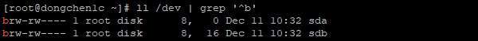
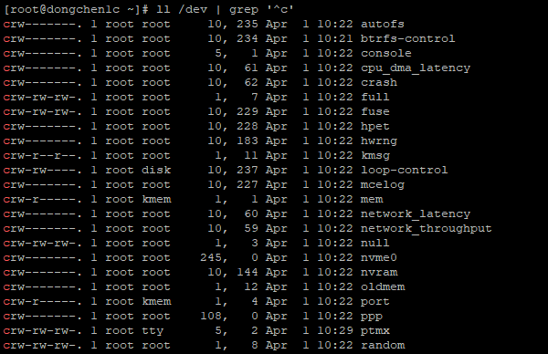

Data is the most critical thing in the system, and the disk is the necessary hardware device to persist the data.
Disk Types
Hard Disk Drive (HDD)
| Revolution Per Minute (RPM) |
I/O Per Second (IOPS) |
Description |
| 5400-15000 |
50-210 |
The cost is low; it is possible to recover the data, suitable for database servers. |
Solid State Drive (SSD)
| Revolution Per Minute (RPM) |
I/O Per Second (IOPS) |
Description |
| None |
5000 and above |
The cost is high; it is impossible to recover the data, suitable for application servers. |
Disk Interface Types
Calculations between bits, Bytes, Mbps and MBps.
| Abbr |
Calculation |
Description |
| b |
8 bits = 1 Byte |
bit |
| B |
1 Byte = 8 bits |
Byte |
| Mbps |
8 Mbps = 1 MBps |
Megabits Per Second. |
| MBps |
1 MBps = 8 Mbps |
MegaBytes Per Second. |
Parallel Port
| Name |
Speed (Mbps) |
Speed (MBps) |
| IDE |
133 |
1064 |
| SCSI |
640 |
5120 |
Serial Port
| Name |
Speed (Mbps) |
Speed (MBps) |
| SATA |
768 |
6144 |
| SAS |
768 |
6144 |
| USB 2.0 |
60 |
480 |
| USB 3.0 |
640 |
5120 |
File Systems
Disk File System
Linux File System
| Name |
Description |
| ext2 |
Second extended file system, designed for Linux systems. |
| ext3 |
A journaled form of ext2. |
| ext4 |
A follow up for ext3 and also a journaled filesystem with support for extents. |
| ReiserFS |
File system that uses journaling |
| XFS |
Used on SGI IRIX and Linux systems |
Shared-disk File System
| Name |
Description |
| GFS2 |
(Global File System) from Red Hat. Available for Linux under GPL. Symmetric (GDLM) or Asymmetric (GULM). |
| OCFS2 |
(Oracle Cluster File System) from Oracle Corporation. Available for Linux under GPL. Symmetric. |
Distributed File System
| Name |
Description |
| NFS |
Originally from Sun Microsystems is the standard in UNIX-based networks. NFS may use Kerberos authentication and a client cache. |
Distributed Parallel Fault-tolerant File Systems
| Name |
Description |
| Ceph |
A massively scalable object store. |
| GlusterFS |
A general purpose distributed file system for scalable storage. |
| MoosFS |
A fault tolerant, highly available and high performance scale-out network distributed file system. |
Special-purpose File System
Pseudo and Virtual File Systems
| Name |
Description |
| proc |
A pseudo-file system, used to access kernel information about processes. |
| tmpfs |
In-memory temporary file system (on Linux platforms) |
| specfs |
Special File System for device files. |
| sysfs |
A virtual file system in Unix-like operating systems holding information about buses, devices, firmware, filesystems, etc. |
Disk and Partition Suffixes
Disks
Disks’ names usually start with sd followed by a, b, c, d, etc.
| Name |
Meaning |
| sda |
First disk. |
| sdb |
Second disk. |
| sdc |
Third disk. |
| sdd |
Fourth disk. |
| sdN |
Nth disk. |
Partitions
Disks’ partitions usually start with sd{a|b|c|d} followed by 1, 2, 3, 4, etc.
| Name |
Meaning |
| sda1 |
First disk’s first partition. |
| sda2 |
First disk’s second partition. |
| sda3 |
First disk’s third partition. |
| sda4 |
First disk’s fourth partition. |
| sdaN |
First disk’s Nth partition. |
Master Boot Record (MBR)
- Used by the Basic Input Output System (BIOS) boot mode when booting the operating system.
- Almost every PCs and Servers support BIOS.
- Poor compatibility with other hardwares.
- Supports Legacy programs.
- Slower than UEFI.
Total MBR size is 512 bytes.
| Description |
Size (Bytes) |
Purpose |
| Bootstrap code area |
446 |
Run BootLoader and other necessary programs. |
| Primary partition tables |
64 = 16 Bytes * 4 |
Create partition entries. |
| Boot signature |
2 |
Check whether MBR is valid. |
Global Unique Identifiers Partition Table (GPT)
- Used by the Unified Extensible Firmware Interface (UEFI) boot mode when booting the operating system.
- Later PCs and Servers support UEFI.
- Good compatibility with other hardwares.
- Doesn’t support Legacy programs.
- Faster than BIOS.
Disk Modes
Cylinder Head Sector (CHS)
1000000 GB = 1 PB
| Maximum Addressing Space (GB) |
Addressing (bits) |
Description |
| 8 |
24 |
A legacy hard disk mode. |
Logical Block Addressing (LBA)
1 PB = 1000000 GB
| Maximum Addressing Space (PB) |
Addressing (bits) |
Description |
| 128 |
48 |
A later hard disk mode. |
Device Type
Block
Show block devices:

Character
Show character devices:

Device Numbers
Major Number
The fifth column of the device list:
1
|
ll /dev | grep '^c' | awk '{print $10, $5}'
|
Minor Number
The sixth column of the device list:
1
|
ll /dev | grep '^c' | awk '{print $10, $6}'
|
Links
Create hard link:
1
2
3
|
ll
ln awk_file awk_file_ln
ll
|
Show files and linked numbers:
1
|
ll | awk '{print $9, $2}'
|
Hard Link
- Will accumulate the linked number.
- Can’t be applied to directory.
- Can’t be created in different partitions.
- The size of the link is the size of the original file.
Symbolic Link
- Won’t accumulate the linked number.
- Can be applied to directory.
- Can be created in different partitions.
- The size of the link is the length of the target path.
References
Revolutions per minute,
IOPS,
Hard disk drive,
List of file systems,
Master boot record,
GUID Partition Table,
Device file,
Block (data storage),
12.2 ln: Make links between files
 Buy me a coffee
Buy me a coffee